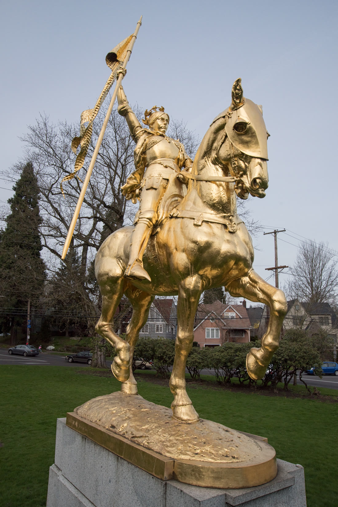

Coe Circle, Laurelhurst
Joan of Arc in Portland
A gilded Joan of Arc rides in Coe Circle, where Northeast Cesar E. Chavez Boulevard meets Northeast Glisan Street. Henry Waldo Coe gave the city this cast of Emmanuel Frémiet's 1874 Paris statue. It arrived from France in 1924 and was dedicated on Memorial Day, 30 May 1925, for the doughboys of World War I. This is an independent Profitnet guide to that monument.

-Sculpture-In-Portland-Oregon.jpg){kind=link}
See it, and stay out of the lanes
- Circle
- Coe Circle, 3900 Northeast Glisan Street, Portland. The statue stands on the grass in the median. Northeast Cesar E. Chavez Boulevard, formerly 39th Avenue, crosses Glisan here.
- How to approach
- This is a traffic circle. Use the crosswalks. Once you are on the grass, stay there. Do not step into the travel lanes for a closer picture. Cars move around the circle on all sides.
- Map
- 45.52633 north, 122.62301 west. Open the map.
A Paris cast for the doughboys
The original is Frémiet's gilded bronze Jeanne d'Arc of 1874, in the Place des Pyramides in Paris. Coe saw it on a visit to France and commissioned a casting from the original molds. The Portland figure is equestrian bronze, with a hammered-copper pennant in her raised right hand and a laurel wreath on her head. The whole surface was covered in gold leaf. She is one of several copies of that Paris statue.
The city's monument list dates the work to 1924 and gives the sculpture as 15 feet by 7 feet 6 inches by 5 feet, on a granite base 9 feet by 9 feet by 5 feet. The material is bronze, copper, and gold leaf. A Smithsonian Save Outdoor Sculpture survey measured the bronze at about 12 feet by 5.5 feet by 9 feet, and the base at about 8 feet by 3 feet by 9 feet. The arts council catalog lists a height of 13 feet. The city list is the one posted with the collection now.
The city art commission and the Portland chapter of architects held a contest for the base. Margaret Goodin Fritsch won it. She was the first woman to graduate from the University of Oregon's architecture school. Blaesing Granite Works cut the stone.
Coe chose Joan because she had been a patron figure for American soldiers in France. Doughboys sang Joan of Arc, They Are Calling You as they marched. At the unveiling the Royal Rosarian quartet sang that song. Remarks from President Calvin Coolidge and French president Gaston Doumergue were read. The ceremony was 30 May 1925, Memorial Day.
The gold came off, then went back on
The leaf wore away. By the time the Smithsonian program surveyed the statue in 1993, the shine was gone. The copper pennant and the wreath had deteriorated too. Neighbors and the city spent nearly three years raising money. A Save Outdoor Sculpture grant of $24,000 was matched by Target Stores, the National Endowment for the Arts, Providence Health Systems, and people in the neighborhood. In 2002 the gold leaf went back on. Conservator Jonathan Tagart made a new pennant and a new wreath. Nancy Thorn restored the leaf. The statue was rededicated in May 2002. A photograph from 1 March 2015 still shows the gilding bright.
Coe's other gifts
Joan was one of four statues Henry Waldo Coe gave Portland, meant to dress the city's public places. The others are Pompeo Coppini's George Washington, George Fite Waters's Abraham Lincoln, and Alexander Phimister Proctor's Theodore Roosevelt, Rough Rider. The city's monument list now marks those three offsite. Joan is the one still standing in the circle that carries Coe's name.
Other stops
Laurelhurst is a residential neighborhood around the circle. The statue is the reason to stop, and the grass island is the place to stand. Downtown, Portlandia is the copper figure over the Portland Building door, a different sculpture and a different errand. The Rosa Parks statue is in Eugene.
Questions
Where is the Joan of Arc statue?
In Coe Circle, the grass median where Northeast Cesar E. Chavez Boulevard meets Northeast Glisan Street, in Laurelhurst. The circle address used for the stop is 3900 Northeast Glisan Street. Cross at the crosswalks and stay on the grass.
When was it dedicated?
The cast arrived from France in 1924. It was dedicated on Memorial Day, 30 May 1925, for the doughboys of World War I. Remarks from President Calvin Coolidge and French president Gaston Doumergue were read at the ceremony.
When was the gold leaf restored?
A 1993 Smithsonian survey found the gold leaf gone. In 2002, after nearly three years of fundraising and a $24,000 Save Outdoor Sculpture grant, the city restored the gold leaf and replaced the copper pennant and the laurel wreath. The statue was rededicated in May 2002.
Sources
- City of Portland, public art monuments. The 1924 date, the city dimensions, Coe Circle, and the May 2002 rededication.
- Joan of Arc (Portland, Oregon). The Paris original, the 1925 dedication, Fritsch's base, and the 1993 survey.
- Regional Arts and Culture Council catalog. Bronze, copper, and gold leaf, and the May 30, 1925 readings.
- Medieval Portland. The 3900 Northeast Glisan address, the 2002 conservators, and the doughboy song.
Last updated .